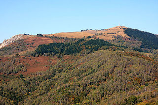

Geografia
Il territorio della regione è suddivisibile in tre fasce concentriche, di cui la prevalente e più esterna è
quella alpina ed appenninica. Al suo interno vi è la zona collinare, la quale racchiude la zona pianeggiante.
Nella regione scorrono moltissimi fiumi e torrenti, tutti affluenti del fiume Po che nasce al Pian del Re ai
piedi del Monviso.
Monti
Le principali catene montuose sono le alpi, che circondano la regione ad ovest e nord, e gli Appennini
che,situati al confine con Liguria ed Emilia-Romagna, costituiscono così un confine naturale.
Piemonte significa ai piedi dei monti, così definito perché circondato su tre lati dalle montagne delle
Alpi Occidentali e dell’Appennino Ligure. La montagna piemontese ha un aspetto imponente ed aspro:infatti
le sommità al di sopra dei tremila metri scendono rapidamente verso la pianura.
Fiumi
Il territorio piemontese è ricco di corsi d’acqua, tutti tributari del fiume Po, che attraversa interamente
la regione da ovest a est. Da citare oltre allo stesso Po, sono:
- Tanaro,il principale affluente di destra, lungo 276 km con i suoi sub-affluenti principali, la Bormida e
la Stura di Demonte;
- Dora Riparia,affluente di sinistra, lungo 125 km, percorre interamente, coi suoi affluenti, la Valle di
Susa;
- Sesia,lungo 140 km, attraversa il vercellese ed è uno dei più importanti fiumi del Piemonte orientale;
- Ticino,lungo 248 km, il secondo fiume italiano per portata d’acqua, immissario ed emissario del
Lago Maggiore, scorre però solo per pochi km interamente in Piemonte in quanto funge da confine con la
Lombardia;
Le Attività
La maggior parte della popolazione vive in pianura in particolare a Torino e nei paesi limitrofi,dove
si concentra l’attività industriale. Nelle province di Vercelli e di Novara, l’economia è basata sulla
coltivazione del riso di cui la regione è il primo produttore italiano. Altri prodotti dell’agricoltura praticata con
tecniche macchinari moderni sono: cereali, patate, ortaggi, frutta e foraggio. Sulle colline sono diffusi i vigneti
che producono vini pregiati.

Clicca sul stemma del Comune di Novara
Clima
Il Piemonte ha un clima tipicamente temperato a carattere sub-continentale che sulle Alpi
diventa progressivamente temperato-freddo e freddo salendo in quota. Nelle zone situate a bassa quota gli
inverni sono freddi ed umidi (spesso si formano nebbie fitte) ma poco piovosi. Le estati invece sono calde ed
afose con possibilità di forti temporali, specialmente nelle zone a nord del Po.
Le Alpi
Le Alpi sono la catena montuosa più importante d’Europa. Si chiamano in francese Alpes,
in tedesco Alpen,in sloveno Alpe. Sesto Pompeo Festo nel suo Primo Libro attesta che il nome deriva da ALBUS (bianco)
che i Sabini pronunciavano Alpus e indicava il colore sempre bianco della catena innevata anche durante la stagione estiva.
Per convenzione le Alpi iniziano a ovest del Colle di Cadibona, anche se in realtà il confine geologico
è posto nei pressi di Genova ed è costituito dal Gruppo di Voltri, terminano a ovest della città di
Vienna,coprendo una distanza di circa 1.300 km a forma di arco tra l’Italia Settentrionale, la Francia
sud-orientale,la Svizzera, il Liechtenstein, l’Austria, il sud della Germania, la Slovenia e l’Ungheria occidentale.
Tra Verona e Monaco di Baviera raggiungono la larghezza massima.

Le Alpi viste dallo spazio,maggio 2002
Torna alla pagina principale
Novara
Novara è un comune italiano di 105.574 abitanti, capoluogo dell'omonima provincia in Piemonte.
È il secondo comune della regione per popolazione dopo Torino e crocevia di importanti traffici commerciali
tra gli assi viari che congiungono Milano a Torino e Genova alla Svizzera.
Simbolo della città è la cupola della Basilica di San Gaudenzio, alta 121 metri

La cupola della Basilica di San Gaudenzio
Novara dista 49 km da Milano (15 km dal confine con la regione Lombardia), 95 km da Torino, 23 km
da Vercelli.Dista inoltre circa 35 km dal Lago Maggiore e 40 km dal Lago d'Orta.

Risaie allagate alla periferia della città
Monumenti e luoghi d'interesse
L'antico nucleo cittadino di Novara, di forma pressoché pentagonale, è situato su un modesto
rilievo collinare (oggi Centro Storico, sede dell'omonima circoscrizione) e conserva ancora per gran
parte,nonostante le pesanti manomissioni in chiave moderna e le molte architetture neoclassiche,
l'antico impianto medievale con strade ciottolate e piccole piazze (piazza delle Erbe e piazza della Repubblica).

Resti delle mura romane
Centro strorico
Il monumento più celebre di Novara è la Basilica di San Gaudenzio, costruita tra fine Cinquecento
ed inizio Seicento, e caratterizzata dall'imponente cupola neoclassica a pinnacolo progettata da
Alessandro Antonelli e aggiunta al corpo della chiesa nella seconda metà XIX secolo, da molti considerata
la più alta al mondo in mattoni.
Centro della vita religiosa cittadina è l'imponente Duomo, in stile neoclassico, progettato anch'esso
da Alessandro Antonelli e costruito a metà del XIX secolo sui resti di una preesistente
cattedrale romanica (sorge infatti nello stesso punto in cui si trovava anticamente il tempio di Giove), della quale
appartengono ancora la parte inferiore del campanile, il Chiostro della Canonica e l'Oratorio di San Siro.

Porticato della piazza del Duomo
- Arengo del Broletto (XII-XV secolo).
- Palazzo Tornielli-Bellini (inizio XVI secolo), dal 1905 è la sede centrale della Banca Popolare di
Novara.
- Ospedale Maggiore della Carità, edificato a partire dal 1628 ed ampliato nei secoli successivi ad
opera di vari architetti tra i quali Alessandro Antonelli, a metà dell'Ottocento.
- Teatro Coccia (fine del XIX secolo), inaugurato il 22 dicembre 1888. L'attuale edificio sorge sulle
spoglie del settecentesco teatro Morelli (poi dedicato a Carlo Coccia), abbattuto per permettere la
nuova costruzione, opera dell'architetto Giuseppe Oliverio. Oltre a personaggi illustri come Arturo
Toscanini e il compianto Guido Cantelli, in anni più recenti ha ospitato il programma televisivo
Bravo Bravissimo, condotto da Mike Bongiorno.
- Casa Quaroni (XX secolo), testimonianza di stile liberty a Novara.

Il teatro Coccia

Casa Quaroni
Torna alla pagina principale
Il Lago Maggiore
Il lago Maggiore è un lago prealpino di origine fluvioglaciale, il secondo per superficie in Italia.
Il suo nome "Maggiore" deriva dal fatto che un tempo si riteneva il più esteso dei laghi prealpini.
Il lago Maggiore si trova ad un'altezza di circa 193 m s.l.m., la sua superficie è di 212 km2 di cui circa l'80%
è situata in territorio italiano e il rimanente 20% in territorio svizzero. Ha un perimetro di 170 km e una
lunghezza di 64,37 km (la maggiore tra i laghi italiani); la larghezza massima è di 10 km e quella media di
3,9 km.

Il lago visto da sopra Brissago (Svizzera)
Clima e Statistiche
Il Lago Maggiore è caratterizzato da inverni freddi, ma più miti rispetto all'entroterra, e moderatamente
nevosi (con accumuli medi di 10 cm per ogni nevicata e talvolta anche superiori ai 30 cm fino ad un
massimo di 50 cm), le estati sono moderatamente calde umide e temporalesche, la temperatura media di
gennaio si attesta sui 2 gradi centigradi, con punte di 3 gradi sul versante settentrionale del golfo Borromeo,
le temperature notturne possono scendere sotto lo 0, fino a -10, ma molto raramente scendere sotto tale
valore. In estate le temperature medie si attestano attorno ai 22 gradi centigradi, con punte diurne che
raramente superano i 32 gradi.
Luoghi
Tra i luoghi caratteristici ricordiamo il Mottarone, conosciuto anche come "Montagna dei due laghi" per la
sua particolare posizione tra Lago d'Orta e Lago Maggiore, è il più alto rilievo del Vergante. Dalla sua vetta,
che in inverno si trasforma in una frequentata stazione sciistica, si gode uno dei più bei panorami sulle Alpi
centro occidentali, sulla Pianura lombardo-piemontese e su sette laghi (Maggiore, Orta, Mergozzo, Varese,
Comabbio, Monate e Biandronno).

La vetta del Mottarone
Il Lago Maggiore dista circa 35 km dal centro storico di Novara e circa 50 km da Vercelli.
Torna alla pagina principale